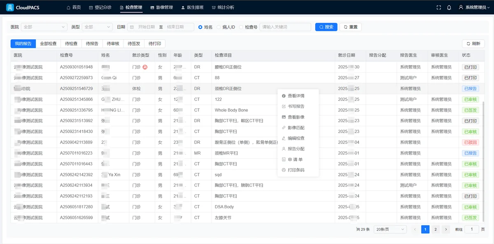
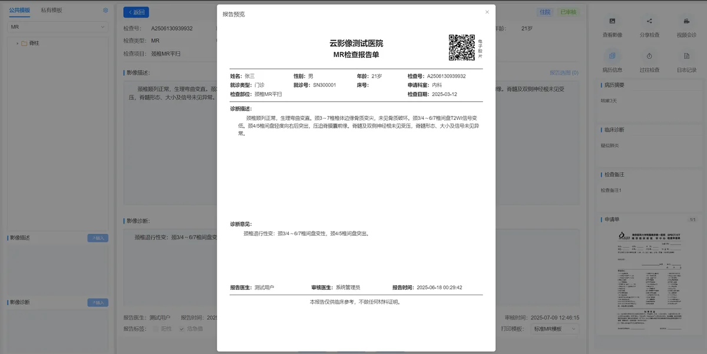
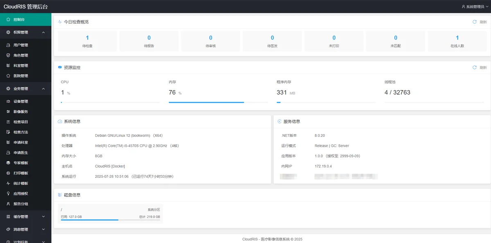

产品概述
CloudRIS 是面向医院放射科、影像科的云影像信息系统（RIS），覆盖检查登记、影像关联、报告书写与审核、签发打印等业务环节，并与医院信息系统（HIS）、影像存档系统（PACS）及各类影像查看器协同工作。
系统提供登记分诊、报告质控、排班与任务分配、统计报表、消息提醒等功能。医护人员通过浏览器登录使用；管理员在后台维护用户权限、科室与设备、模板及对接配置。

应用价值
科室管理
- 检查与报告进度可查、可统计，便于掌握工作量与积压情况
- 书写、审核、签发环节清晰，操作留痕，便于质控与追溯
- 与 HIS、PACS 对接，减少重复录入和系统间来回切换
业务协同
- 登记、技师、报告与审核医生在同一平台协作，状态实时同步
- 结合排班规则自动分配报告与审核任务，减轻人工分单
- 新任务、报告退回等通过消息及时通知相关人员
业务流程
典型流程如下：
登记分诊 → 完成检查（影像进入 PACS）→ 影像与检查匹配 → 报告书写 → 审核 → 签发 → 打印
每条检查在系统中对应统一状态，如已登记、已匹配、报告中、已报告、已审核、已签发、已打印等。审核不通过时可退回修改，相关记录均可查询。
影像匹配完成后，系统可按设备类型、排班等规则自动分配报告医生；报告提交后可继续分配审核医生，具体规则由医院配置。
功能说明
检查登记
- 登记患者信息，选择检查项目与部位，支持一次登记多项检查
- 支持从 HIS 导入门诊、住院、体检等申请单
- 打印检查条码，支持申请单扫描或上传存档
检查管理
- 按检查号、患者姓名、时间等条件查询与跟踪
- 查看检查详情与进度，按权限修改或取消检查
- 查看、管理电子申请单
影像管理
- 查询 PACS 影像，并与检查记录匹配关联
- 支持多种影像查看器对接，按医院配置调阅；查看器调整或切换不影响日常操作习惯
报告管理
- 按规范结构书写报告，支持模板快速录入
- 报告编辑锁定，避免多人同时修改
- 支持保存、审核、退回、签发等流程，可按需配置初审、复审
- 报告选图：在影像查看器中选取关键图像加入当前报告，便于附图展示
- 过往检查对比：按患者查询历史检查与报告，调阅既往影像进行对比，可将历史所见、诊断等内容插入当前报告
- 报告预览与打印；可查阅病历摘要等相关信息
- 已签发报告的修改按权限与流程管控
排班与报告分配
- 维护报告医生、审核医生排班
- 排班与分配规则参与自动分单，任务优先分配给在岗人员
统计与报表
- 工作台提供检查量、工作量等常规统计与图表展示
- 支持低代码配置报表：在管理后台维护报表名称、查询条件与展示模板，绑定业务数据后即可发布使用
- 支持在线生成与预览，支持导出 Excel，便于科室分析、考核与上报
其他能力
- 消息通知：待办、退回、分配变更等实时提醒
- 检查分享：在授权策略下生成分享链接或二维码（范围可配置）
- 远程会诊：可选开通，便于院内外协作
- 系统管理：用户与权限、科室与设备、模板与字典、操作与登录日志等
系统对接
| 对接对象 | 主要作用 |
|---|
| HIS | 获取申请单及患者信息，支撑登记与核对 |
| PACS | 影像数据接入，完成与检查、报告的关联 |
| 影像查看器 | 统一阅片入口，支持多种查看器对接与配置 |
| 临床信息系统 | 报告签发后按医院规范供临床调阅 |
对接范围与方式在实施阶段与医院信息科及相关厂商共同确定。
产品特点
- 业务闭环：覆盖登记、影像、报告、审核、签发、统计与报表全链条
- 报表可配：内置统计与低代码配置报表，可按科室、院区灵活扩展
- 质控规范：多级审核、退回修改、版本与操作记录
- 灵活部署：支持单院、多院区及上下级协同报告
- 开放兼容：多种数据库与影像查看器可选，适配信创及国产化环境
- 权限可控：按岗位分配功能与操作权限，关键行为可审计
- 运维完善：系统监控、日志查询及计划任务等管理能力
部署环境与兼容性
- 多平台：B/S 架构，浏览器即可使用；服务端支持 Windows、Linux，可部署于物理机、虚拟机或容器
- 多数据库：支持主流关系型数据库，便于沿用医院现有数据环境
- 信创适配：可在国产化软硬件环境中部署运行（实施时与医院共同确认清单）
适用场景
- 二级及以上医院放射科、影像科、医学影像中心
- 需与 HIS、PACS 协同、规范影像科业务流程的科室
- 医联体、医疗集团等多院区登记与集中报告、区域协同阅片
- 信创改造、国产化替代或多数据库选型等建设需求
系统界面
业务操作

管理后台

| 适用对象 | 二级及以上医院放射科、影像科、区域影像中心 |
|---|
| 部署方式 | B/S 架构，支持 Windows / Linux / 容器化部署 |
|---|